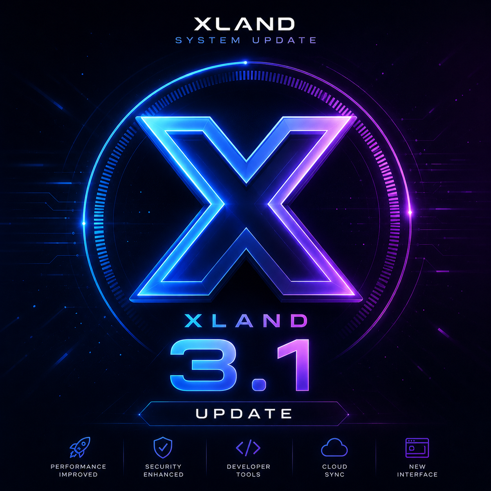
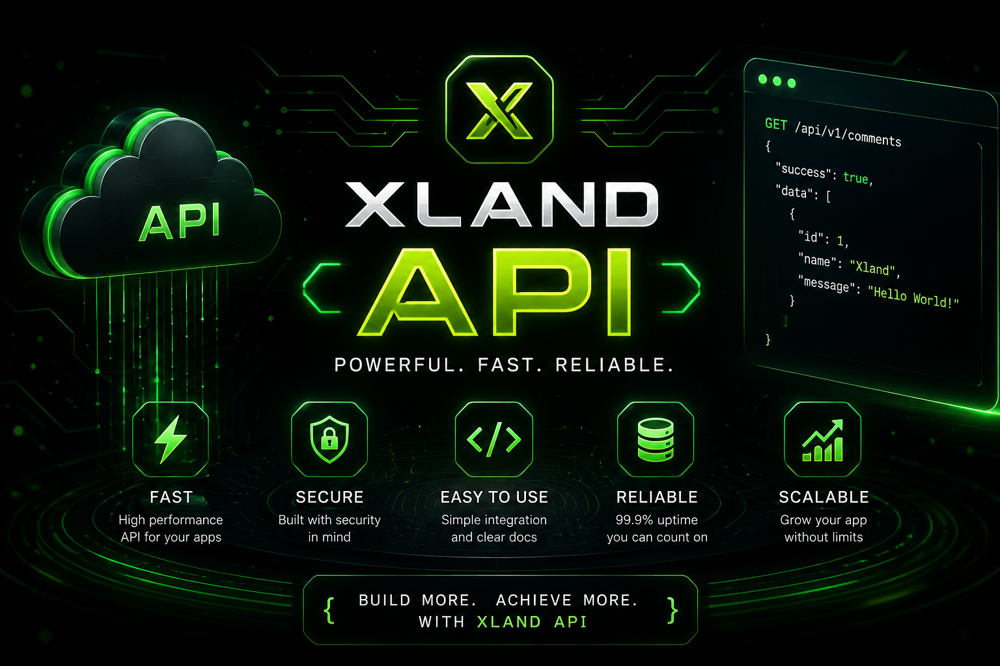

What Happened to Xland?
The major Internet disruptions experienced during 2026 affected many online services, developers and digital projects.
Xland was also affected by these conditions. With unstable and limited Internet access, several parts of the Xland ecosystem became harder to develop, test, publish and maintain.

⚠️ Impact on Xland
- 🌐 Unstable Internet connectivity
- 📡 Difficulty accessing online services
- 📦 Problems downloading development resources
- 🚀 Slower publishing and deployment
- 🔧 Difficulties testing online features
- 💬 Reduced communication with the Xland community
How Did the Shutdown Affect Xland?
The Internet disruption created several challenges for the Xland project.
Development and publishing workflows became slower, while accessing online resources and testing Internet-dependent features became more difficult.
Xland Continued Development
Despite these challenges, development of Xland continued.
Instead of stopping the project completely, development efforts focused on features that could be built and tested locally.
Xland Support continued to receive updates, while new projects and tools were developed alongside the existing ecosystem.
A New Focus on Reliability
The Internet disruptions also influenced the direction of future Xland development.
Reliability, security and offline-friendly functionality are becoming increasingly important considerations for the Xland ecosystem.
🚀 Future Focus
- 🛡️ Improved security and protection
- 💾 More local and offline functionality
- 🔄 Reliable synchronization
- 📡 Better handling of unstable connections
- ⚙️ More resilient online services
Where Is Xland Now?
Xland is still under active development.
The project continues to move forward with new updates, developer tools, games, APIs and improvements to Xland Support.
The Internet shutdown created serious challenges, but it did not stop the project.
What's Next for Xland?
The next stage of Xland development will focus on building a stronger and more reliable ecosystem.
The lessons learned during the Internet disruptions will remain important for future Xland projects, especially for services that depend on stable online connectivity.
📸 Gallery


💬 Comments (0)